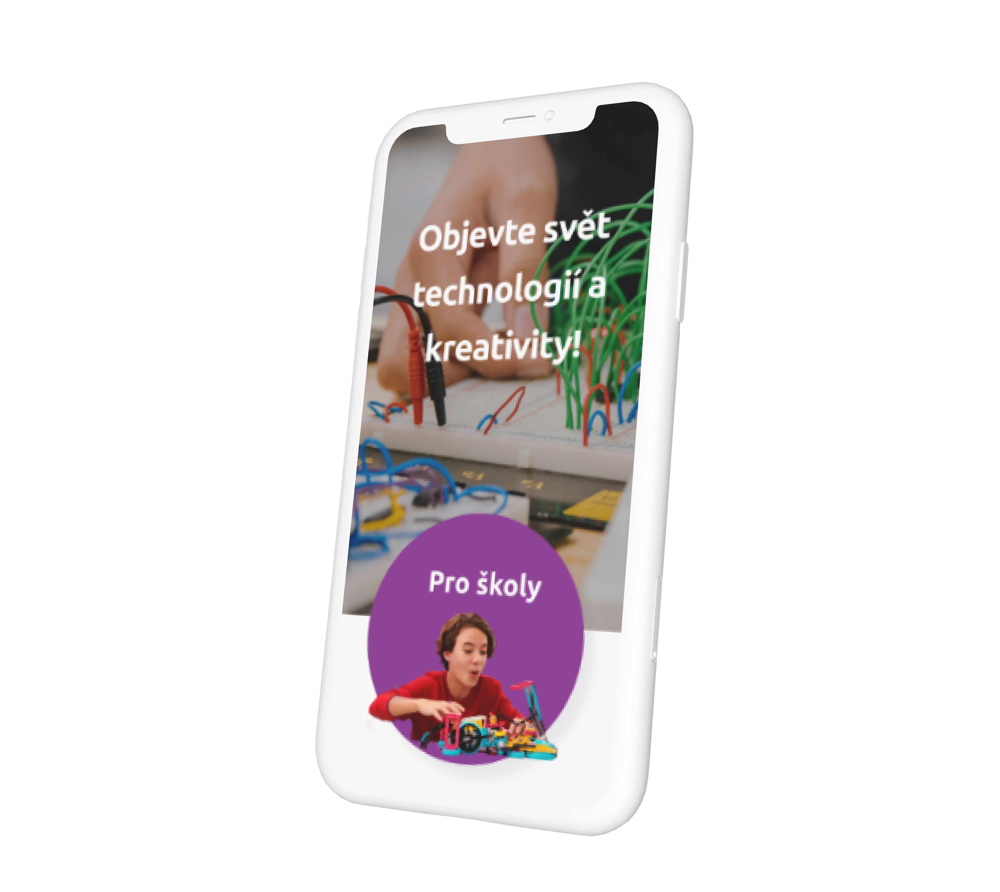

Šest měsíců kurzu. Jedno zadání: navrhnout web od nuly. Vybrala jsem si DDM Ulita — pobočku, kde děti staví roboty, weby a programují hry. A hned na začátku jsem narazila na základní otázku: jak v jednom vizuálním stylu skloubit barevný dětský svět s věcností techniky?

Klinika techniků je specializovaná pobočka DDM Ulita na Praze 3. Kroužky robotiky, modelářství a programování — provoz, který si zaslouží web stejně funkční a přehledný jako projekty, které tam vznikají. Cílem bylo navrhnout koncept webu, který pobočce pomůže prezentovat její aktivity a kroužky.
Na projektu jsem pracovala zcela samostatně. Poprvé jsem si prošla celým designovým procesem v jednom kuse — od výzkumu přes uživatelské toky a wireframy až po vizuální styl a interaktivní prototyp ve Figmě.
Aby web oslovil správné lidi, bylo potřeba vědět, kdo jsou. Definovala jsem čtyři persony — od rodiče hledajícího kroužek pro dítě přes učitele IT až po teenagera, který chce programovat sám. Každá persona měla jiné potřeby a jiný způsob, jak web prochází.

Jedna ze čtyř person – základ pro strukturální i vizuální rozhodování
Tato fáze mě překvapila nejvíc. Poprvé jsem si vyzkoušela přetavit abstraktní zadání do vizuálních emocí — a zjistila jsem, že hledání vizuálního jazyka je designérská práce, ne jen estetická volba.
Hledala jsem rovnováhu mezi dvěma světy: hravostí dětského prostředí a barevností techniky. Moodboard mi pomohl ukotvit, jaký pocit má web vyvolávat — ještě předtím, než jsem otevřela Figmu.
Na základě barev z loga jsem postavila systém komponent — typografii, stavy tlačítek, opakující se prvky. Poprvé jsem zažila, co znamená vizuální konzistence napříč responzivními obrazovkami. A co stojí, když ji nemáte.


Moodboard a stylescape – hledání vizuálního jazyka mezi hravostí a technikou
Informační architektura a celkový vizuální styl mi vyšly dobře. Ale formulář — tam jsem narazila na svůj tehdy největší limit.
Prvky nedržely pohromadě. Rozhraní nevypadalo přesvědčivě. A já tehdy neměla v prstech dost Figmy, abych věděla proč — natož abych to opravila.
Formuláře jsou designérsky náročné přesně proto, že slabé místo nemůžete schovat za dekoraci — každý prvek musí dávat smysl sám o sobě. Tuhle lekci jsem si vzala do dalšího projektu a formulářům věnovala velkou pečlivost.
.png)
Mobilní verze homepage – ukázka z interaktivního prototypu
Interaktivní prototyp celého konceptu ve Figmě:
Interaktivní prototyp — Figma
Tento projekt byl můj první průchod celým designovým procesem od začátku do konce. A právě proto mi dal tři věci, které se nedají naučit jinak: